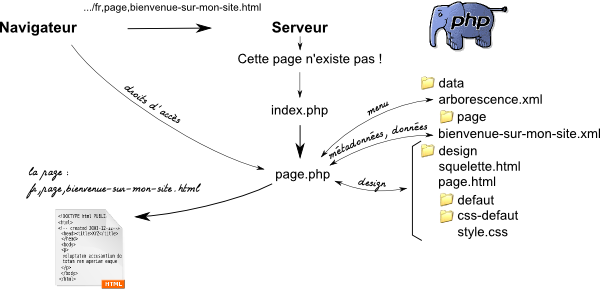

Les urls de ce site sont construits de la façon suivante :
Comme on le voit, les différentes parties de l'url sont séparées par des virgules tandis que les mots des paramètres sont séparés par des virgules, exemple :
www.mon-site.com/fr,page,bienvenue-sur-mon-site.html
www.mon-site.com/fr,article,editorial,comment-construire-un-site-internet.html
La page www.mon-site.com/fr,page,bienvenue-sur-mon-site.html n'existe pas sur le serveur : il n'y a pas de fichier
s'appellant ainsi.
Quand le navigateur demande au serveur la page www.mon-site.com/fr,page,bienvenue-sur-mon-site.html, le serveur redirige
la requête vers la page www.mon-site.com/index.php. Le fichier index.php va extraire les données de l'url :
l'abbreviation de la langue, le module ainsi que le(s) paramètre(s). Vu qu'une page .html est demandée, le fichier index.php
va transmettre les paramètres et la langue au module demandé (dans ce cas au module "page").
De manière simplifiée : le module "page" (page.php) va :
data/page/bienvenue-sur-mon-site.xml et en extraire les métadonnées (le titre, l'auteur, la description),
les droits de la page, le design lié à la page (nom du thème et du style), le contenu principal et le contenu secondaire ;data/arborescence.xml et en extraire le menu ;.html) ;Ces actions sont les actions élémentaires que chaque module possède ! Le module "page" est donc le module de base. Les autres modules sont basés sur ce modules et comportent des actions supplémentaires
